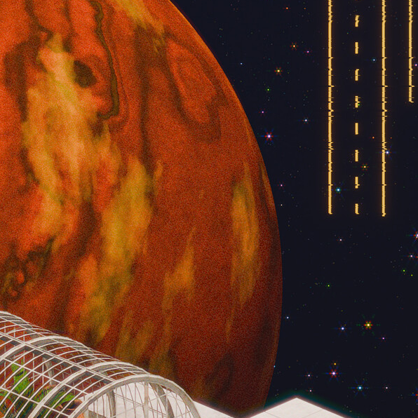
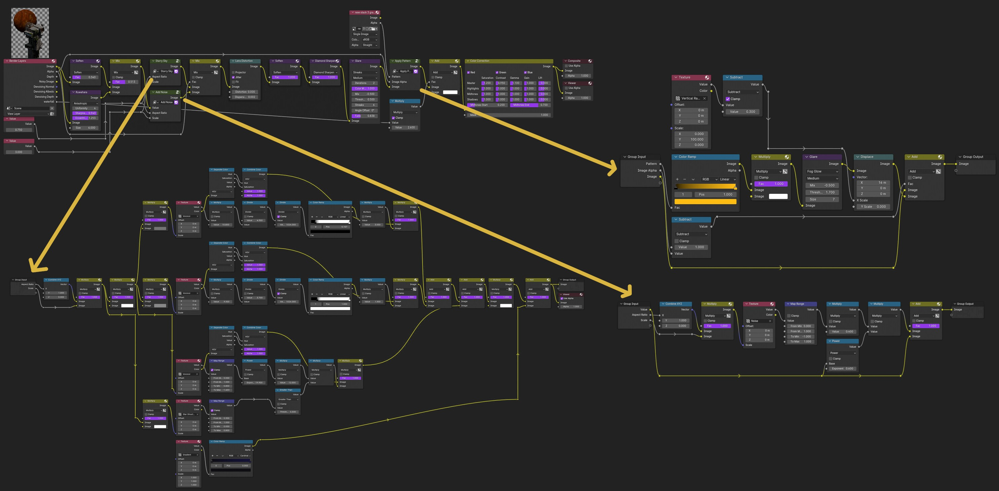

this is a poster-style art project i created using Blender and Inkscape. 'connect' is a space-themed surreal piece where i'm combining 3D work including modelling, procedural texturing, and generative geometry with 2D graphic elements using a complex compositing setup.
 closeupthe gas giant planet in the background, somewhat inspired by Jupiter, is entirely procedural using Blender's shader nodes (see above). the closeup also highlights the details of the compositing process, including the glow of the graphic background elements, and the grain and lens noise effects. see below for details of these effects.
projects like this, as well as giving me the chance to express the impression of a dream-like place out of time, give me a great opportunity to stretch my procedural shader work and experimental way of developing. i particularly love Blender's node-based approach to this because it makes it easier to work on the art side of building effects, rather than the programming side. however, i have done work in other projects to recreate post-processing effects like this as full-screen shaders.
the only part of this project not made by me is the image of clouds, which is CC0 licensed. and like, Blender and Inkscape obviously.
breakdown of compositing steps